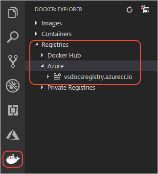
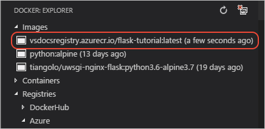
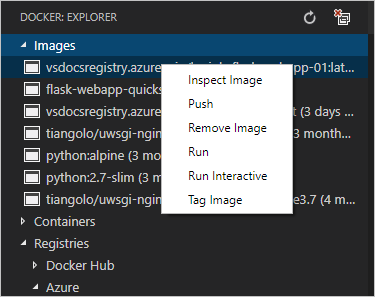
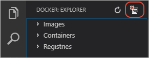
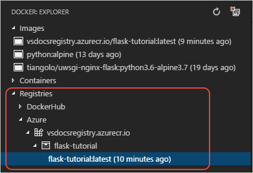

Create Docker containers for Python
This tutorial walks you through the full process of containerizing an existing Python application using Docker and pushing the app image to a Docker registry, all within Visual Studio Code. The tutorial also demonstrates how to use base container images that include production-ready web servers (uwsgi and nginx), and how to configure those servers for both Django and Flask web apps, which is helpful to know no matter what your deployment target.
If you have any problems, feel free to file an issue for this tutorial in the VS Code documentation repository.
An introduction to containers
Docker is a system that allows you to deploy and run apps using containers rather than setting up dedicated environments like virtual machines. A container is a lightweight runtime environment that shares the resources of the host operating system with other containers. Docker is the layer that sits above the operating system to manage resources on behalf of containers.
A container is specifically an instance of a Docker image, an executable package that contains everything needed to run your app: app code, configuration files, runtimes, and all of app's dependencies. An image can be used to instantiate any number of identical containers, which is especially useful when scaling out a cloud-based web app. Because container images are much smaller than virtual machine images, instances can be started and stopped much more quickly than virtual machines, enabling your app to be highly responsive to varying loads at a minimal cost. (When used to scale web apps, containers are often managed in clusters, which are then managed by an orchestration agent such as Kubernetes.)
Images, for their part, are built in multiple layers. The lowest or base layers of an image are typically common elements like the Python runtime; the higher layers contain more specialized elements like your application code. Because of layering, it takes very little time to rebuild an image when changing only the top layer with your app code. Similarly, when you push an image to a container registry, an online repository for images from which you can deploy to cloud services like Azure, only the modified layers need be uploaded and redeployed. As a result, using containers has only a small impact on your develop-test-deploy loop.
You experience the basics of containers and images in the course of this tutorial. For additional background, including helpful diagrams, refer to the Docker documentation.
Prerequisites
- Visual Studio Code
- Python and the Python extension as described on Python Tutorial - Prerequisites.
- Docker Community Edition. To verify your installation, run the command
docker --version, which should show output likeDocker version 18.06.1-ce, build e68fc7a. - The Docker extension for VS Code, which helps you manage local Docker images, provides Docker commands, and simplifies deployment of app images to Azure. You can find an overview of the extension on the vscode-docker GitHub repository
- Suitable app code
App code
If you don't already have an app you'd like to work with, use one of the following samples, which already include the Docker-related files described in this tutorial:
python-sample-vscode-django-tutorial, which is the result of following the Django Tutorial.
python-sample-vscode-flask-tutorial, which is the result of following the Flask Tutorial.
After verifying that your app runs properly, generate a requirements.txt file (using pip freeze > requirements.txt, for example) so that those dependencies can be automatically installed in the Docker image. The samples each include a requirements.txt file.
Create a container registry
As mentioned earlier, a container registry is an online repository for container images that allows a cloud service, like Azure App Service, to acquire the image whenever it needs to start a container instance. Because the registry manages images separate from container instances, the same image in a registry can be used to start any number of concurrent instances, as happens when scaling out a web app to handle increased loads.
Because setting up a registry is a one-time affair, you do that step now before creating images that you then push to that registry.
Registry options include the following:
- The Azure Container Registry (ACR), a private, secure, hosted registry for your images.
- Docker Hub, Docker's own hosted registry that provides a free way to share images.
- A private registry running on your own server, as described on Docker registry in the Docker documentation.
To create an Azure Container Registry, as shown later in this tutorial, do the following:
Follow the first part of Quickstart: Create a container registry using the Azure portal through the "Log in to ACR" section. You don't need to complete the sections "Push image to ACR" and later because you do those steps within VS Code as part of this tutorial.
Make sure that the registry endpoint you created is visible under Registries in the Docker explorer of VS Code:

Create a container image
A container image is a bundle of your app code and its dependencies. To create an image, Docker needs a Dockerfile that describes how to structure the app code in the container and how to get that code running. The Dockerfile, in other words, is the template for your image. The Docker extension helps you create these files with customization for production servers.
Note: The Python samples linked earlier in this article already contain the necessary Docker files. The instructions here help you create files for an app of your own.
Create the Docker files
In VS Code, open the Command Palette (
kb(workbench.action.showCommands)) and select the Docker: Add Docker files to workspace command.When the prompt appears after a few moments, select Python as the app type.
Specify the port on which your app listens, such as 8000 (as in the Django sample) or 5000 (as in the Flask sample). The port value ends up only in the Docker compose files (see below) and have no impact on your container image.
With all this information, the Docker extension creates the following files:
The
Dockerfilefile describes the contents of your app's layer in the image. Your app layer is added on top of the base image indicated in theDockerfile.. By default, the name of the image is the name of the workspace folder in VS Code.A
.dockerignorefile that reduces image size by excluding files and folders that aren't needed in the image, such as.gitand.vscode. For Python, add another line to the file for__pycache__.docker-compose.ymlanddocker-compose.debug.ymlfiles that are used with Docker compose. For the purposes of this tutorial, you can ignore or delete these files.
Tip: VS Code provides great support for Docker files. See the Working with Docker article to learn about rich language features like smart suggestions, completions, and error detection.
Using production servers
For Python, the Docker extension by default specifies the base image python:alpine in the Dockerfile and includes commands to run only the Flask development server. These defaults obviously don't accommodate Django, for one, and when deploying to the cloud, as with Azure App Service, you should also use production-ready web servers instead of a development server. (If you've used Flask, you're probably accustomed to seeing the development server's warning in this regard!)
For this reason, you need to modify the Dockerfile to use a base image with production servers, then provide the necessary configuration for your app. The following sections provide details for both Flask and Django.
Changes for Flask apps
A good base image for Flask is tiangolo/uwsgi-nginx-flask:python3.6-alpine3.7, which is also available for other versions of Python (see the tiangolo/uwsgi-nginx-flask repository on GitHub). This image already contains Flask and the production-ready uwsgi and nginx servers.
By default, the image assumes that (a) your app code is located in an app folder, (b) the Flask app object is named app, and (c) the app object is located in main.py. Because your app may have a different structure, you can indicate the correct folders in the Dockerfile and provide the necessary parameters the uwsgi server in a uwsgi.ini file.
The following steps summarize the configuration used in the python-sample-vscode-flask-tutorial app, which you can adapt for your own code.
The
Dockerfileindicates the location and name of the Flask app object, the location of static files for nginx, and the location of theuwsgi.inifile. (TheDockerfilein the sample contains further explanatory comments that are omitted here.)FROM tiangolo/uwsgi-nginx-flask:python3.6-alpine3.7 ENV LISTEN_PORT=5000 EXPOSE 5000 # Indicate where uwsgi.ini lives ENV UWSGI_INI=uwsgi.ini # Tell nginx where static files live. ENV STATIC_URL=/hello_app/static # Set the folder where uwsgi looks for the app WORKDIR /hello_app # Copy the app contents to the image COPY . /hello_app # If you have additional requirements beyond Flask (which is included in the # base image), generate a requirements.txt file with pip freeze and uncomment # the next three lines. #COPY requirements.txt / #RUN pip install --no-cache-dir -U pip #RUN pip install --no-cache-dir -r /requirements.txtThe
uwsgi.inifile, which is in the root of the sample project folder, provides configuration arguments for the uwsgi server. For the sample, the configuration below says that the Flask app object is found in thehello_app/webapp.pymodule, and that it's named (that is, "callable" as)app. The other values are additional common uwsgi settings:[uwsgi] module = hello_app.webapp callable = app uid = 1000 master = true threads = 2 processes = 4
Changes for Django apps
A good base image for Django is tiangolo/uwsgi-nginx:python3.6-alpine3.7, which is also available for other versions of Python (see the tiangolo/uwsgi-nginx repository on GitHub).
This base image already contains the production-ready uwsgi and nginx servers, but does not include Django. It's also necessary to provide settings to uwsgi so it can find the app's startup code.
The following steps summarize the configuration used in the python-sample-vscode-django-tutorial app that you can adapt for your own code.
Make sure you have a
requirements.txtfile in your project that contains Django and its dependencies. You can generaterequirements.txtusing the commandpip freeze > requirements.txt.In your Django project's
settings.pyfile, modify theALLOWED_HOSTSlist to include the root URL to which you intend to deploy the app. For example, the following code assumes deployment to an Azure App Service (azurewebsites.net) named "vsdocs-django-sample-container":ALLOWED_HOSTS = [ # Example host name only; customize to your specific host "vsdocs-django-sample-container.azurewebsites.net" ]Without this entry, you'll eventually get all the way through the deployment only to see a "DisallowedHost" message that instructs to you add the domain to
ALLOWED_HOSTS, which requires that you rebuild, push, and redeploy the image all over again!Create a
uwsgi.inifile in the Django project folder (alongsidemanage.py) that contains startup arguments for the uwsgi server. In the sample, the Django project is in a folder calledweb_project, which is where thewsgi.pyandsetting.pyfiles live.[uwsgi] chdir = . module = web_project.wsgi:application env = DJANGO_SETTINGS_MODULE=web_project.settings uid = 1000 master = true threads = 2 processes = 4To serve static files, copy the nginx.conf file from the django-react-devcontainer repo into your Django project folder.
Modify the
Dockerfileto indicate the location ofuwsgi.ini, set the location of static files for nginx, and make sure the SQLite database file is writable. (TheDockerfilein the sample contains further explanatory comments that are omitted here.)FROM tiangolo/uwsgi-nginx:python3.6-alpine3.7 ENV LISTEN_PORT=8000 EXPOSE 8000 # Indicate where uwsgi.ini lives ENV UWSGI_INI=uwsgi.ini # Tell nginx where static files live (as typically collected using Django's # collectstatic command. ENV STATIC_URL=/app/static_collected # Copy the app files to a folder and run it from there WORKDIR /app ADD . /app # Make app folder writable for the sake of db.sqlite3, and make that file also writable. RUN chmod g+w /app RUN chmod g+w /app/db.sqlite3 # Make sure dependencies are installed RUN python3 -m pip install -r requirements.txt
Note: When building a Docker image on Windows, you typically see the message below, which is why the Dockerfile shown here includes the two
chmodcommands. If need to make other files writable, add the appropriatechmodcommands to your Dockerfile.SECURITY WARNING: You are building a Docker image from Windows against a non-Windows Docker host. All files and directories added to build context will have '-rwxr-xr-x' permissions. It is recommended to double check and reset permissions for sensitive files and directories.
Build and test the image
With the necessary Dockerfile in place, you're ready to build the Docker image and run it locally:
Make sure that Docker is running on your computer.
On the VS Code Command Palette (
kb(workbench.action.showCommands)), select Docker: Build Image.When prompted for the Docker file, choose the
Dockerfilethat you created in the previous section. (VS Code remembers your selection so you won't need to enter it again to rebuild.)When prompted for a name to give the image, use a name that follows the conventional form of
<registry or username>/<image name>:<tag>, where<tag>is typicallylatest. Here are some examples (when using the Azure Container Registry):# Examples for Azure Container Registry, prefixed with the registry name vsdocsregistry.azurecr.io/python-sample-vscode-django-tutorial:latest vsdocsregistry.azurecr.io/python-sample-vscode-flask-tutorial:latest vsdocsregistry.azurecr.io/myexpressapp:latest # Examples for Docker hub, prefixed with your username vsdocs-team/python-sample-vscode-django-tutorial:latest vsdocs-team/python-sample-vscode-flask-tutorial:latest vsdocs-team/myexpressapp:latestEach step of Docker's build process appears in the VS Code Terminal panel, including any errors that occur running the steps in the
Dockerfile.Tip: every time you run the Docker: Build image command, the Docker extension opens another Terminal in VS Code in which to run the command. You can close each terminal once the build is complete. Alternately, you can reuse the same terminal to build the image by scrolling up in the command history using the up arrow.
When the build is complete, the image appears in the Docker explorer under Images:

Run and test your container locally by using the following command, replacing
<image_name>with your specific image, and changing the port numbers as needed. For web apps, you can then open browser tolocalhost:<port>to see the running app.# For Flask sample docker run --rm -it -p 5000:5000 <image_name> # For Django sample docker run --rm -it -p 8000:8000 <image_name>
Two useful features of the Docker extension
The Docker extension provides a simple UI to manage and even run your images rather than using the Docker CLI. Just expand the Image node in the Docker explorer, right-click any image, and select any of the menu items:

In addition, on the top of the Docker explorer, next to the refresh button, is a button for System Prune. This command cleans up any dangling and otherwise unused images on your local computer. It's a good idea to periodically use the command to reclaim space on your file system.

Push the image to a registry
Once you're confident that your image works, the next step is to push it to your container registry:
On the Command Palette (
kb(workbench.action.showCommands)), select Docker: Push.Choose the image you just built to push the image to the registry; upload progress appears in the Terminal.
Once completed, expand the Registries > Azure (or DockerHub) node in the Docker explorer, then expand the registry and image name to see the exact image. (You may need to refresh the Docker explorer.)

Tip: The first time you push an image, you see that VS Code uploads all of the different layers that make up the image. Subsequent push operations, however, upload only those layers that have changed. Because it's typically only your app code that's changes, those uploads happen much more quickly, making for a tight edit-build-deploy-test loop. To see this, make a small change to your code, rebuild the image, and then push again to the registry. The whole process typically completes in a matter of seconds.
Next steps
Now that you've created a container with your app, you're ready to deploy it to any container-ready cloud service. For details on deploying to Azure App Service, see Deploy a container.
You can also learn more about the Docker extension for VS Code by visiting the vscode-docker repository on GitHub. Issues and contributions are welcome.
And again, if you encountered any problems in the course of this tutorial, feel free to file an issue for this tutorial in the VS Code documentation repository.